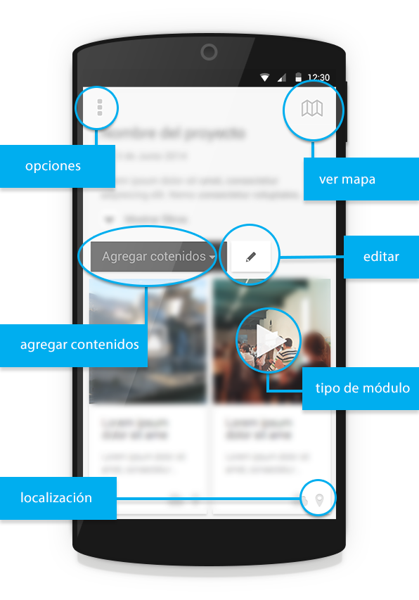

Ayuda
¿Qué es Ubicarama APP?

Ubiqarama es un ecosistema formado por una plataforma web y una aplicación móvil que facilitan la construcción de narrativas digitales territoriales
La APP ubiqarama está diseñada para mapear territorios a través de la creación de vídeos, fotos, audios y textos que se sincronizan con la plataforma en formato mosaico y que se geoposicionan en mapas permitiendo crear rutas.Con ubiqarama cualquier persona u organización puede crear y personalizar su propio proyecto de mapeado.
Ubiqarama es un proyecto de Úbiqa por Simettric y DDC-agency
volver